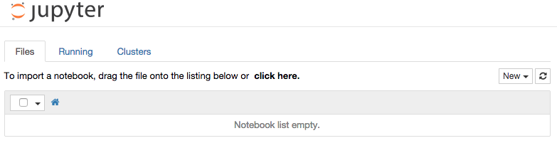

Mobile phone data analysis
@ NetMob 2015
Luc Rocher / rocher.lc / lrocher@mit.edu
Our schedule!
- Navigate on the virtual machine
- Load the datasets with Python and Bandicoot
- Perform outstanding analyses
ACT I — Unix
Goal: join the NetMob virtual machines
- GNU/Linux & OS X: use the command line
- Windows: www.putty.org
SSH Syntax
ssh {account}@{server}Example
ssh datathon2@195.25.101.106
datathon2@vc1-vm1:~$And now?
The datasets are in /data.
- How to navigate on the server?
- How to look at files, move, or delete them?
- Best practices to work remotely
How to navigate on the server?
$ cd /data
$ ls
ContextData SET1 SET2 SET3
$ ls /data/ContextData
bandicoot_v01.pdf D4D_Senegal.pdf senegal_arr_centroids.csv
SENEGAL_ARR_V2.csv Shapefile_Senegal_V2.zip SITE_ARR_LONLAT.CSVI'm lost!
$ pwd
/data$ ls -lh /data/ContextData
total 1.4M
-rw-r--r-- 1 root root 150K Mar 23 10:55 bandicoot_v01.pdf
-rw-r--r-- 1 root root 200K Mar 23 10:55 D4D_Senegal.pdf
-rw-r--r-- 1 root root 9.9K Mar 23 10:55 senegal_arr_centroids.csv
-rw-r--r-- 1 root root 3.6K Mar 23 10:55 SENEGAL_ARR_V2.csv
-rw-r--r-- 1 root root 994K Mar 23 10:55 Shapefile_Senegal_V2.zip
-rw-r--r-- 1 root root 46K Mar 23 10:55 SITE_ARR_LONLAT.CSVMove
mv {old file} {new file}Copy
cp {old file} {new file}/!\ Delete
rm {file}
rm -r {directory}
rmdir {empty directory}Quick look at SITE_ARR_LONLAT.CSV
$ head SITE_ARR_LONLAT.CSV
site_id,arr_id,lon,lat
1,2,-17.525142,14.746832
2,2,-17.524360,14.747434
3,2,-17.522576,14.745198
4,2,-17.516398,14.746730
5,2,-17.512870,14.740658
6,2,-17.512103,14.748411
7,2,-17.510958,14.737403
8,2,-17.508395,14.730968
9,2,-17.507036,14.740671
Use tail for the end of the file
How to know more? Great tutorial on:
Best practices
- Monitor resources (disk, memory, CPU)
- Save the current session
Monitor resources
free -m for used memory (MB)
top to see an interactive overview

“htop is an interactive text-mode process viewer for Linux. It aims to be a better 'top'.”

screen/tmux/byobu (here): terminal multiplexer
Interactive IPython notebook remotely
# Server
ipython2 notebook --no-browser --port=8889
# Client
ssh -N -f -L localhost:8889:localhost:8889 {user}@{d4d-server}
Go to http://localhost:8889 to use Python remotely
ACT II — Python
- How to Python!
- Load the datasets and visualize them (using pandas and matplotlib)
Great reference at diveintopython3.net
Think of Python as pseudo-code
x, y, z = 1, 2, 3
first, second = second, first
a = b = 123
Indentation with four spaces
if x < 5 or (x > 10 and x < 20):
print "The value is OK."
for i in [1,2,3,4,5]:
print "This is iteration number", i
# Print out the values from 0 to 99 inclusive.
for value in range(100):
print value
Working with lists
>>> kitchen = ["spam", "spam", "spam", "spam", "spam", "eggs", "tomato", "spam"]
>>> print len(kitchen)
8
>>> print kitchen[0], kitchen[-1]
spam spam
>>> kitchen[1:3]
['spam', 'spam']
List comprehension
>>> [elem for elem in kitchen if elem != "spam"]
['eggs', 'tomato']
Working with dictionaries
>>> call_duration = {"Alice": 23452532, "Boris": 252336,
"Clarice": 2352525, "Doris": 23624643}
>>> call_duration["Alice"]
23452532
>>> call_duration["Robin"] = 0
>>> call_duration.keys()
['Boris', 'Clarice', 'Alice', 'Doris', 'Robin']
>>> max(call_duration.values())
23624643
Functions
def square(x):
return x*x
print square(6) # Prints out 36
def change(some_list):
some_list[1] = 4
x = [1,2,3]
change(x)
print x # Prints out [1,4,3]
Going deeper!
- NumPy: fast computation on arrays and matrices
- SciPy: scientific computation (optimization, linear algebra, integration, signal processing…)
- pandas: data manipulation and analysis
- networkx: manipulation and study of graphs
- matplotlib: 2D and 3D plotting
First example: SET1S_01.CSV.gz
# timestamp, outgoing id, incoming id, number of texts
2013-01-01 00,1,61,1
2013-01-01 00,1,340,1
2013-01-01 00,1,419,1
2013-01-01 00,1,420,1
2013-01-01 00,1,447,2
What we would like to do:
- Distributions of number_of_texts per hour
- Network on a specific date
- Most central cell tower
{notebook for SET1 example}
pandas: quick review
Series and Dataframe at the foundation
s = pandas.Series([1, 3, 5, np.nan, 6, 8])
df = pandas.DataFrame({'A': serie_1, 'B': serie_2})
Easy to manipulate tables: fill, missing data, select columns or row, filter, transpose, group…
ACT III — Behavioral indicators
See more at bandicoot.mit.edu
{notebook for bandicoot}